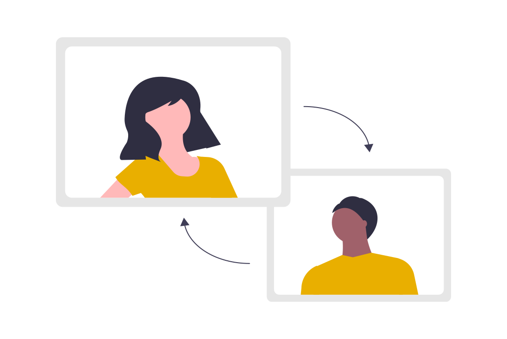
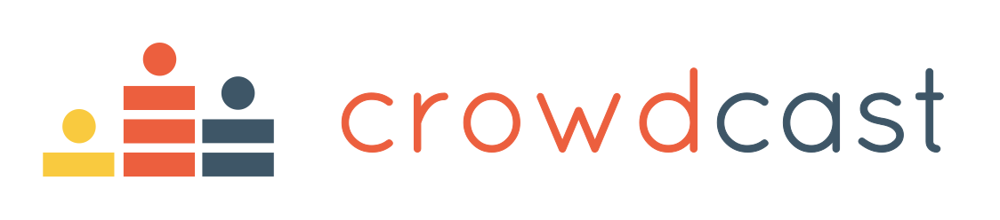

Time zones and hubs
A global online event has to find a good way to compromise on several things.
- We have to make sure that attendees can join without completely messing up their biological rhythm.
- We need to have the live broadcast of the event (kick off, pitches, wrap up, coffee/lunch room)
- and the TrainTrack happen when attendees are actually awake.
The general idea is to have several places (hubs) that participate in the same global Brainhack, allowing us to partly tackle the question of geographical inclusivity by allowing people to easily attend no matter where they are.
Each hub follows the same internal structure with respect to platforms used for communication and volunteer roles.
In addition to this event being the first ever virtual OHBM brainhack, it will also be happening three times within a 24 hour window, across multiple time-zones. The goal here is to ensure that more people from around the world are able to join in during reasonable working hours for them.
- Americas Hub
- Europe, Middle East, and Africa Hub
- Asia and Pacific Hub
The event is decentralized across several “hubs” that span a set of time-zones. In order for the event to run as smoothly as possible across all hubs, each hub will follow the same general schedule and have various volunteer roles who help with the event. Some of the roles are selected by the OHBM Open-Science Special Interest Group (OSSIG) while others are open to volunteers.
Selected by the OS-SIG
Each hub has two brainhack hosts who welcome the participants during the kickoff and project pitches, moderate the unconferences, and liase with the other volunteers.
The hub manager makes sure that everything is running smoothly in the background!
Each TrainTrack session has an instructor, and there will be teaching assistants available for answering questions while a TrainTrack session is being presented.
The Youtube master ensures that all content is streamed to different platforms.
Open to volunteers
If you want to help us with running the brainhack here is a list of the different roles we would need help with.
Get in touch with us.
Are you keen on helping Brainhack backstage? Making sure that projects follow guidelines that will help onboard new members? Sign up as a project monitor! In the weeks preceding Brainhack, you will review submitted projects and support project leads to follow Brainhack project setup guidelines. During Brainhack, you will encourage project lead to provide short documentation on what happened at the end of each day. More info here.
Would you like to help orientate Brainhack attendees throughout the event? Provide a relaxed space for informal chat? Sign up as a welcome desk host! You will chat with attendees and provide any feedback they need. More information here.
Are you familiar with website development? Would you like to help shaping an engaging experience for Brainhack attendees? Sign up as a website team member! You will be part of a global team in charge of keeping the website up-to-date and designing new features to make it more engaging, inclusive and welcoming. More information here.
You have already attended a brainhack, are keen in welcoming new members in the Brainhack community? Sign up as a Brainhack buddy! You will be paired with an attendee who is coming to their first hackathon. You will spend 1-hour a day with them during the event to help their onboarding. More information here.

Ready to share your technical expertise at the Brainhack? Sign up for the Brainhack helpdesk and answer attendees’ technical questions during the event. As a member of the helpdesk you will monitor the helpdesk channel and answer any questions related to your expertise. More information here.
Each hub will have a virtual room where people can go and chat, meet with people for their morning or afternoon coffee, lunch, or evening drinks. The social breakout host’s role is keep the conversation going in a relaxed and inclusive atmosphere.
Would you like to help developing Brainhack social media communications? Sign up as a member of the social media team! You will be part of a global team in charge of spreading our communications for the OHBM Brainhack.
Platforms
Each hub will be using the OSSIG Crowdcast for the main sessions, and this content will be streamed on our Youtube channel simultaneously such that those who are not formally registered can follow along as well.

Mattermost is an open-source messsenging system equivalent to Slack where we will be sharing information regularly.
If you are not familiar with mattermost, make sure you check out the user-guide and that short video that describes how it works.
- Generic channels:
- Project channel: Each project will have its own channel
- Help desk: We have set up some channels that we will be using during the brainhack to facilate people asking for help. Each channel is associated with a jitsi video chat in case some face to face interaction and screen sharing is needed to trouble shoot some of the problems.
Each project will be using Zoom or Jitsi for their individual calls.
HackTrack
As with previous OHBM hackathons, we've developed a project template that we would like project leads to use for submitting their project proposals.
Each project is allocated to a project monitor who will follow the project from submission until the end of the brainhack. To make sure that project monitors have enough time to review project submissions, we will be closing projects submission before the event starts.
Project checklist: this is a spreadsheet to help the project helpers making sure that each project is on track and submitted everything.
Github issue template: This will be the way to submit brainhack projects. It comes with a checklist to make sure that project leaders and participants can start in the best conditions.
Once a project has been submitted the project helper can tag it using issue labels to make it easier to search amongst the different projects.
TrainTrack
The TrainTrack will cover topics ranging from good code practices, code and data version control, high performance computing, data visualization, and machine learning. Each session will have its own computing requirements, but at a baseline, we strongly recommend that participants make sure that they have the following general computing requirements satisfied in order to be able to follow along with the sessions on their own devices. We will have a virtual help desk available to help participants with installation issues.
In addition to some software that we will list in the subsequent section, these are the general computing requirements:
- Administrative access to your computer such that you can install software on your own.
- If you’re using Windows, the required version is the 64 bit version of Windows 10. Please contact us if you don’t have either MacOS, Linux, or a Windows 10 64-bit machine.
Along with the platforms that we will be using for virtual TrainTrack presentations and communication, we ask that you install the following software.
- Mattermost (can be used in the browser as well)
- A modern browser (for using Crowdcast and Jitsi)
- Zoom
- A command-line shell: Bash
- A version control system: Git
- A GitHub account
- A remote-capable text editor: VSCode
- Python 3 via Miniconda
- Datalad
- A virtualization system: Docker
OS-specific installation instructions
Bash shell
All Ubuntu and other Linux distros come with Bash as the default shell, so no need to download it! Some versions of Linux may require that you type bash inside the terminal to access it. To verify if this is the case, follow these steps:
Open a terminal and type echo $SHELL. If it reads /bin/bash then you are all set! If it does not,
then for all parts of the subsequent instructions, whenever the instructions read “open a terminal,”
please assume you are to open a terminal, type bash, and the proceed with the instructions as specified.
Git
You most likely already have Git installed. To check if you do:
- On Debian - type
sudo apt-get install gitinside the terminal - On Fedora - type
sudo yum install gitinside the terminal.
VSCode
Go to the visual studio code website and click the download button for either the .deb (Ubuntu, Debian) or the .rpm (Fedora, CentOS) file.
Double-click the downloaded file to install VSCode. (You may be prompted to type your administrator password during the install).
VSCode extensions
- Open the Ubuntu application.
- Type
code .into the terminal and pressEnter. You should see a message reading “Installing VS Code Server” and then a new windows will open up. - Press
Ctrl+Shift+Pin the new window that opens and type “Extensions: Install extensions” into the search bar that appears at the top of the screen. Select the appropriate entry from the dropdown menu that appears (there should be four entries; simply select the one that reads “Extensions: Install extensions”). - A new panel should appear on the left-hand side of the screen with a search bar. Search for each of the following extensions and press
Installfor the first entry that appears. (The author listed for all of these extensions should be “Microsoft”.)- Python (n.b., you will need to reload VSCode after installing this)
- Live Share (n.b., you may need to press “Ctrl/Cmd+Shift+P” and type “install extensions” again after installing this)
- Live Share Extension Pack
- Docker
- Remote - WSL
Python
-
Open a new terminal and type the following lines (separately) into the terminal, pressing
Enterafter each one:wget https://repo.anaconda.com/miniconda/Miniconda3-latest-Linux-x86_64.sh bash Miniconda3-latest-Linux-x86_64.sh - A license agreement will be displayed and the bottom of the terminal will read
--More--. PressEnteror the space bar until you are prompted with “Do you accept the license terms? [yes|no].” Typeyesand then pressEnter - The installation script will inform you that it is going to install into a default directory (e.g.,
/home/$USER/miniconda3). Leave this default and pressEnter. - When you are asked “Do you wish the installer to initialize Miniconda3 by running conda init? [yes|no],” type
yesand pressEnter. Exit the terminal once the installation has finished. - Re-open a new terminal.
Type
which pythoninto the terminal and it should return a path (e.g.,/home/$USER/miniconda3/bin/python).- If you do not see a path like this then please try typing
conda init, closing your terminal, and repeating this step. If your issue is still not resolved skip the following step and contact an instructor on the #help-installation channel of the BHS Slack.
- If you do not see a path like this then please try typing
-
Type the following to remove the installation script that was downloaded:
rm ./Miniconda3-latest-Linux-x86_64.sh
Python packages
Open a terminal and type the following commands:
conda config --append channels conda-forge
conda config --set channel_priority strict
conda install -y flake8 ipython jupyter jupyterlab matplotlib nibabel nilearn numpy pandas scipy seaborn
Datalad
Please see the Datalad handbook.
Docker
- You will be following different instructions depending on your distro (Ubuntu, Debian, Fedora, CentOS). Make sure to follow the “Install using the repository” method!
- Once you’ve installed Docker make sure to follow the post-install instructions as well. You only need to do the “Manage Docker as a non-root user” and “Configure Docker to start on boot” steps.
- Open a new terminal and type
docker run hello-world. A brief introductory message should be printed to the screen.
Bash shell
You already have it!
Depending on which version of Mac OS you’re running you may need to type bash inside the terminal to access it.
To check whether this is necessary, follow these steps:
- Open a terminal and type
echo $SHELL. If it reads/bin/bashthen you are all set!
Note: If you are using Mac Catalina (10.15.X) then it is possible your default shell is NOT CORRECT.
To set the default to bash, type chsh -s /bin/bash in the terminal, enter your password when prompted, and then close + re-open the terminal.
Git
You may already have it!
Try opening a terminal and typing git --version.
If you do not see something like “git version X.XX.X” printed out, then follow these steps:
- Follow this link to automatically download an installer.
- Double click the downloaded file (
git-2.23.0-intel-universal-mavericks.dmg) and then double click thegit-2.23.0-intel-universal-mavericks.pkgicon inside the dmg that is opened. - Follow the on-screen instructions to install the package.
VSCode
- Go to the visual studio code website and click the download button.
- Unzip the downloaded file (e.g.,
VSCode-darwin-stable.zip) and moving the resultingVisual Studio Codefile to your Applications directory.
VSCode extensions
- Open the Visual Studio Code application
- Type
Cmd+Shift+Pand then enter “Shell command: Install ‘code’ command in PATH” into the search bar that appears at the top of the screen. Select the highlighted entry. A notification box should appear in the bottom-right corner indicating that the command was installed successfully. - Type
Cmd+Shift+Pagain and then enter “Extensions: Install extensions” into the search bar. Select the appropriate entry from the dropdown menu that appears (there should be four entries; simply select the one that reads “Extensions: Install extensions”). - A new panel should appear on the left-hand side of the screen with a search bar.
Search for each of the following extensions and press
Installfor the first entry that appears. (The author listed for all of these extensions should be “Microsoft”.)- Python (n.b., you will need to reload VSCode after installing this)
- Live Share (n.b., you may need to press “Ctrl/Cmd+Shift+P” and type “install extensions” again after installing this)
- Live Share Extension Pack
- Docker
Python
-
Open a new terminal and type the following lines (separately) into the terminal, pressing
Enterafter each one:curl -O https://repo.anaconda.com/miniconda/Miniconda3-latest-MacOSX-x86_64.sh bash Miniconda3-latest-MacOSX-x86_64.sh - A license agreement will be displayed and the bottom of the terminal will read
--More--. PressEnteror the space bar until you are prompted with “Do you accept the license terms? [yes|no].” Typeyesand then pressEnter - The installation script will inform you that it is going to install into a default directory (e.g.,
/home/$USER/miniconda3). Leave this default and pressEnter. - When you are asked “Do you wish the installer to initialize Miniconda3 by running conda init? [yes|no],” type
yesand pressEnter. Exit the terminal once the installation has finished. - Re-open a terminal.
Type
which pythoninto the terminal and it should return a path (e.g.,/home/$USER/miniconda3/bin/python).- If you do not see a path like this then please try typing
conda init, closing your terminal, and repeating this step. If your issue is still not resolved skip the following step and contact an instructor on the #help-installation channel of the BHS Slack.
- If you do not see a path like this then please try typing
-
Type the following to remove the installation script that was downloaded:
rm ./Miniconda3-latest-MacOSX-x86_64.sh
Python packages
Open a terminal and type the following commands:
conda config --append channels conda-forge
conda config --set channel_priority strict
conda install -y flake8 ipython jupyter jupyterlab matplotlib nibabel nilearn numpy pandas scipy seaborn
Datalad
Please see the Datalad handbook.
Docker
- Go to this website and press “Get Docker”.
- Open the “Docker.dmg” file that is downloaded and drag and drop the icon to the Applications folder
- Open the Docker application and enter your password. An icon will appear in the status bar in the top-left of the screen. Wait until it reads “Docker Desktop is now up and running!”
- Open a new terminal and type
docker run hello-world. A brief introductory message should be printed to the screen.
(The above step-by-step Docker instructions are distilled from here. If you have questions during the installation procedure please check that link for potential answers!)
Windows Subsystem for Linux (WSL)
- Search for
Windows Powershellin your applications; right click and selectRun as administrator. SelectYeson the prompt that appears asking if you want to allow the app to make changes to your device. -
Type the following into the Powershell and then press
Enter:Enable-WindowsOptionalFeature -Online -FeatureName Microsoft-Windows-Subsystem-Linux - Press
Enteragain when prompted to reboot your computer. - Once your computer has rebooted, open the Microsoft Store and search for “Ubuntu.”
Install the program labelled “Ubuntu 18.04” (NOT “Ubuntu 20.04” (bug in gpg that makes git clone from https fail) NOT “Ubuntu 16.04” NOT “Ubuntu”) by clicking the tile, pressing
Get, and thenInstall. - Search for and open Ubuntu from your applications. There will be a slight delay (of a few minutes) while it finishes installing.
- You will be prompted to
Enter new UNIX username. You can use any combination of alphanumeric characters here for your username, but a good choice is<first_initial><last_name>(e.g.,jsmithfor John Smith). You will then be prompted to enter a new password. (Choose something easy to remember as you will find yourself using it frequently.) - Right click on the top bar of the Ubuntu application and select “Properties”. Under the “Options” tab, under the “Edit Options” heading, make sure the box reading “Use Ctrl+Shift+C/V as Copy/Paste” is checked. Under the “Terminal” tab, under the “Cursor Shape” heading, make sure the box reading “Vertical Bar” is checked. Press “Okay” to save these settings and then exit the application.
(The above step-by-step WSL instructions are distilled from here and here. If you have questions during the installation procedure those resources may have answers!)
From this point on whenever the instructions specify to “open a terminal” please assume you are supposed to open the Ubuntu application.
Bash shell
You already have it, now that you’ve installed the WSL!
Git
You already have it, now that you’ve installed the WSL!
VSCode
- Go to the visual studio code website and click the download button, then run the
.exefile. - Leave all the defaults during the installation with the following exception:
- Please make sure the box labelled “Register Code as an editor for supported file types” is selected
VSCode extensions
- Open the Ubuntu application.
- Type
code .into the terminal and pressEnter. You should see a message reading “Installing VS Code Server” and then a new windows will open up. - Press
Ctrl+Shift+Pin the new window that opens and type “Extensions: Install extensions” into the search bar that appears at the top of the screen. Select the appropriate entry from the dropdown menu that appears (there should be four entries; simply select the one that reads “Extensions: Install extensions”). - A new panel should appear on the left-hand side of the screen with a search bar.
Search for each of the following extensions and press
Installfor the first entry that appears. (The author listed for all of these extensions should be “Microsoft”.)- Python (n.b., you will need to reload VSCode after installing this)
- Live Share (n.b., you may need to press “Ctrl/Cmd+Shift+P” and type “install extensions” again after installing this)
- Live Share Extension Pack
- Docker
- Remote - WSL
Python
-
Open a new terminal and type the following lines (separately) into the terminal, pressing
Enterafter each one:wget https://repo.anaconda.com/miniconda/Miniconda3-latest-Linux-x86_64.sh bash Miniconda3-latest-Linux-x86_64.sh - A license agreement will be displayed and the bottom of the terminal will read
--More--. PressEnteror the space bar until you are prompted with “Do you accept the license terms? [yes|no].” Typeyesand then pressEnter - The installation script will inform you that it is going to install into a default directory (e.g.,
/home/$USER/miniconda3). Leave this default and pressEnter. - When you are asked “Do you wish the installer to initialize Miniconda3 by running conda init? [yes|no],” type
yesand pressEnter. Exit the terminal once the installation has finished. - Re-open the Ubuntu application.
Type
which pythoninto the terminal and it should return a path (e.g.,/home/$USER/miniconda3/bin/python).- If you do not see a path like this then please try typing
conda init, closing your terminal, and repeating this step. If your issue is still not resolved skip the following step and contact an instructor on the #help-installation channel on the BHS Slack.
- If you do not see a path like this then please try typing
-
Type the following to remove the installation script that was downloaded:
rm ./Miniconda3-latest-Linux-x86_64.sh
Python packages
Open a terminal and type the following commands:
conda config --append channels conda-forge
conda config --set channel_priority strict
conda install -y flake8 ipython jupyter jupyterlab matplotlib nibabel nilearn numpy pandas scipy seaborn
Datalad
Please see the Datalad handbook.
Docker
Unfortunately, Docker for Windows is a bit of a mess. The recommended version of Docker to install varies dramatically depending not only on which version of Windows you have installed (e.g., Windows 10 Home versus Professional/Enterprise/Education), but also which build of Windows you have. As such, developing a comprehensive set of instructions for installing Docker is rather difficult.
Having said that, if you’re lucky enough to have Windows 10 Professional/Enterprise/Education (i.e. it is not Windows 10 Home), and you don’t use VirtualBox (or if you don’t know what VirtualBox is), then you can download and install Docker for Windows Desktop. Follow the instructions at that link.
If you are using Windows 10 Home, or any other version of Windows, then the best option may be to install Docker Toolbox for Windows.
Instructions for installing Docker Toolbox for Windows:
- Download the latest Docker Toolbox installer (note: that link will automatically download the file)
- Run the downloaded
.exefile and leave all the defaults during the installation procedure. ClickYeson the prompt that appears asking if the application can make changes to your computer. - Search for and open the newly-installed “Docker Quickstart” application.
Again, click
Yeson the prompt that appears asking if the application can make changes to your computer. The application will do a number of things to finish installing and setting up Docker. - Once you see a
$prompt typedocker run hello-world. A brief introductory message should be printed to the screen. - Close the “Docker Quickstart” application and open a terminal (i.e., the Ubuntu application).
-
Copy-paste the following commands. You will be prompted to enter your password once.
# Update the apt package list. sudo apt-get update -y # Install Docker's package dependencies. sudo apt-get install -y \ apt-transport-https \ ca-certificates \ curl \ software-properties-common # Download and add Docker's official public PGP key. curl -fsSL https://download.docker.com/linux/ubuntu/gpg | sudo apt-key add - # Verify the fingerprint. sudo apt-key fingerprint 0EBFCD88 # Add the `stable` channel's Docker upstream repository. sudo add-apt-repository \ "deb [arch=amd64] https://download.docker.com/linux/ubuntu \ $(lsb_release -cs) \ stable" # Update the apt package list (for the new apt repo). sudo apt-get update -y # Install the latest version of Docker CE. sudo apt-get install -y docker-ce # Allow your user to access the Docker CLI without needing root access. sudo usermod -aG docker $USER - Close and re-open the terminal.
- Type
pip install docker-compose. -
Type
powershell.exe "docker-machine config". You should get output similar to the following:--tlsverify --tlscacert="C:\\Users\\<YOUR_USERNAME>\\.docker\\machine\\machines\\default\\ca.pem" --tlscert="C:\\Users\\<YOUR_USERNAME>\\.docker\\machine\\machines\\default\\cert.pem" --tlskey="C:\\Users\\<YOUR_USERNAME>\\.docker\\machine\\machines\\default\\key.pem" -H=tcp://xxx.xxx.xx.xxx:xxxxwhere
<YOUR_USERNAME>will have an actual value (likely your Windows username), andtcp=xxx.xxx.xx.xxx:xxxwill be a series of numbers. If you don’t get this output then something has gone wrong. Please make sure you were able to run thedocker run hello-worldcommand, above. If you were and you still don’t receive this output, please contact one of the instructors on the #help-installation channel on the BHS Slack. -
You will use the the outputs of the above command to modify the commands below before running them in the terminal. First, take the numbers printed in place of the
xs on the output of the line-H=tcp://xxx.xxx.xx.xxx:xxxxfrom above and replace the placeholderxxx.xxx.xx.xxx:xxxxon the first command below (export DOCKER_HOST). Second, take whatever value is printed in place of<YOUR_USERNAME>above and replace the<YOUR_USERNAME>placeholder on the second command below (export DOCKER_CERT_PATH). Once you have updated the commands appropriately, copy and paste them into the terminal:echo "export DOCKER_HOST=tcp://xxx.xxx.xx.xxx:xxxx" >> $HOME/.bashrc echo "export DOCKER_CERT_PATH=/mnt/c/Users/<YOUR_USERNAME>/.docker/machine/certs" >> $HOME/.bashrc echo "export DOCKER_TLS_VERIFY=1" >> $HOME/.bashrc - Close and re-open a terminal (i.e., the Ubuntu application).
Type
docker run hello-world. The same brief introductory message you saw before should be printed to the screen.
Note: If you restart your computer (or somehow otherwise shut down the Docker VM) you will need to re-open the “Docker Quickstart” application and wait until you see the $ prompt again before your docker commands will work again!
If you are having problems running docker commands in the terminal, try re-opening the “Docker Quickstart” application.
(The above step-by-step instructions are distilled from here and here. If you have questions during the installation procedure please check those links for potential answers!)